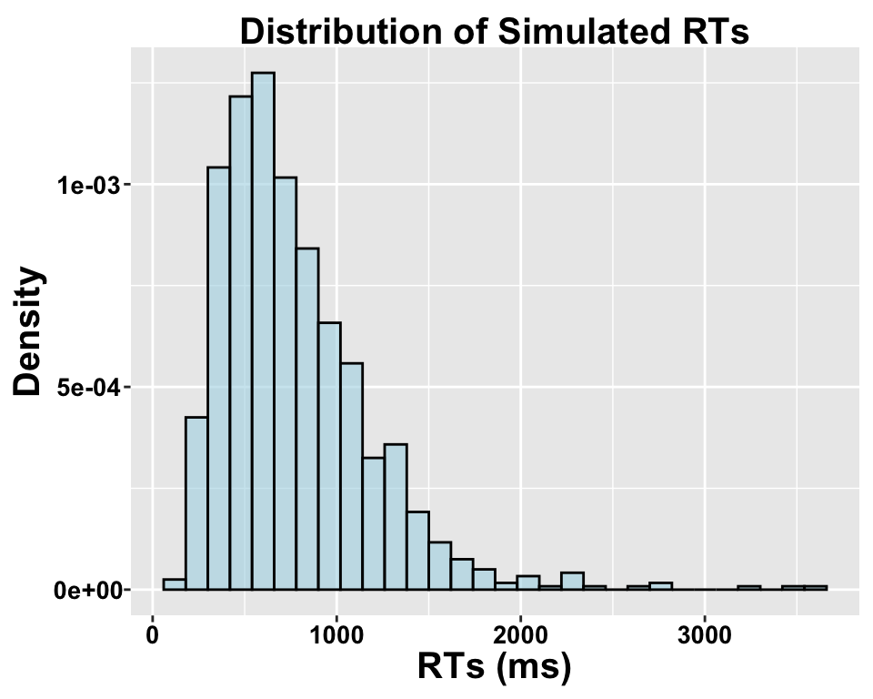
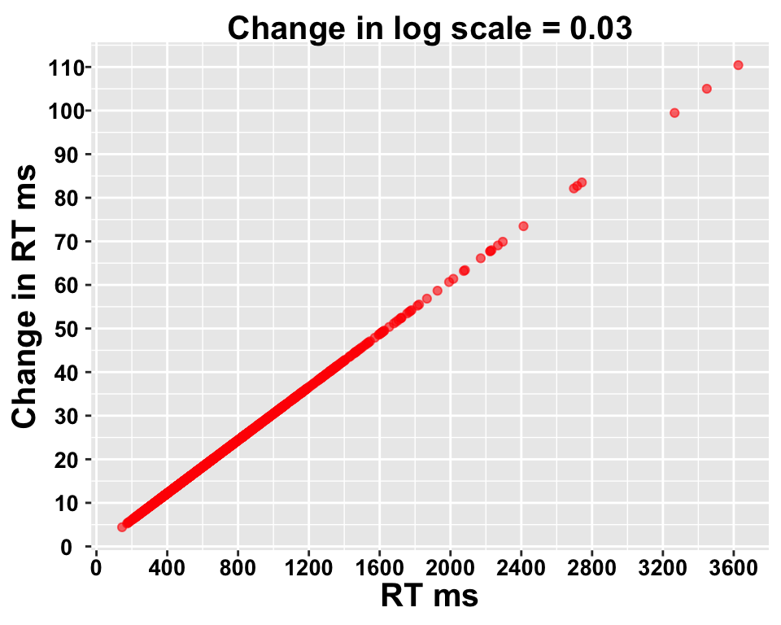
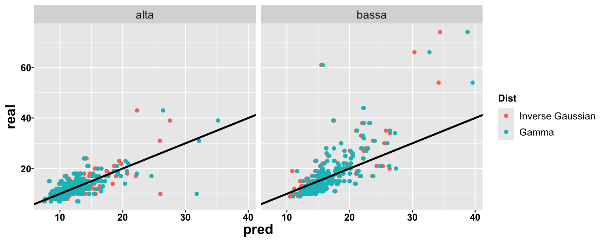
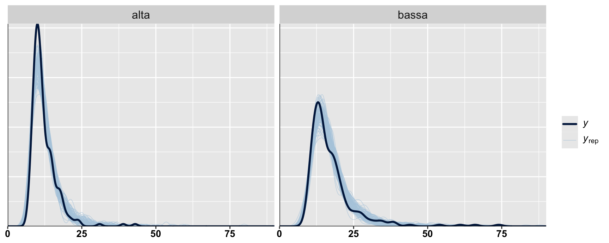
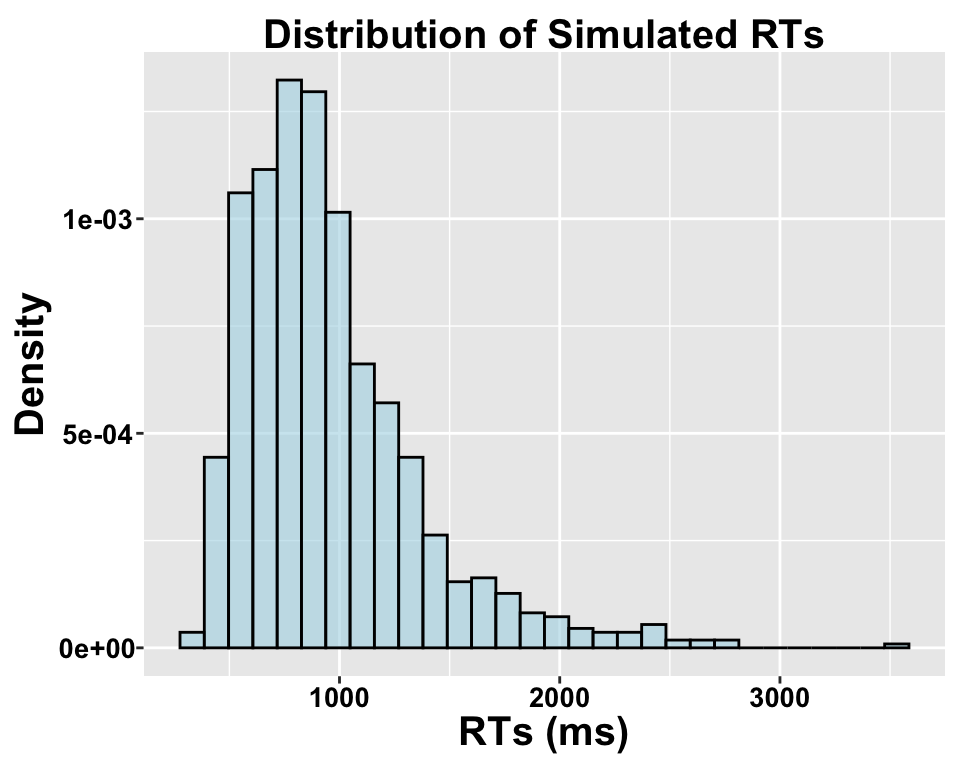
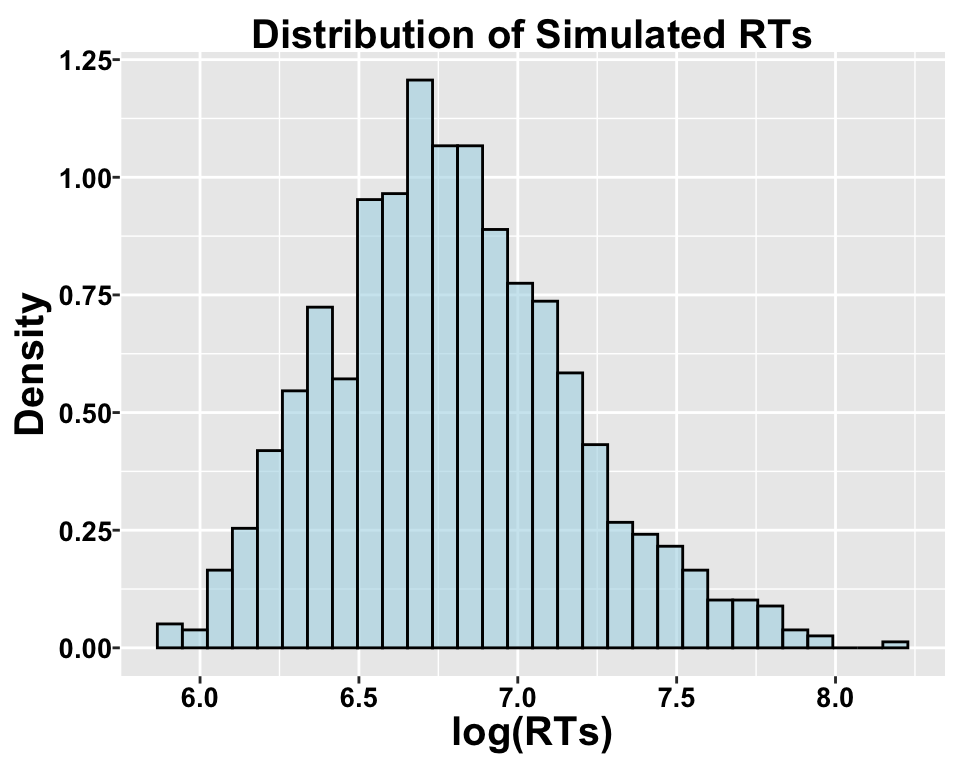
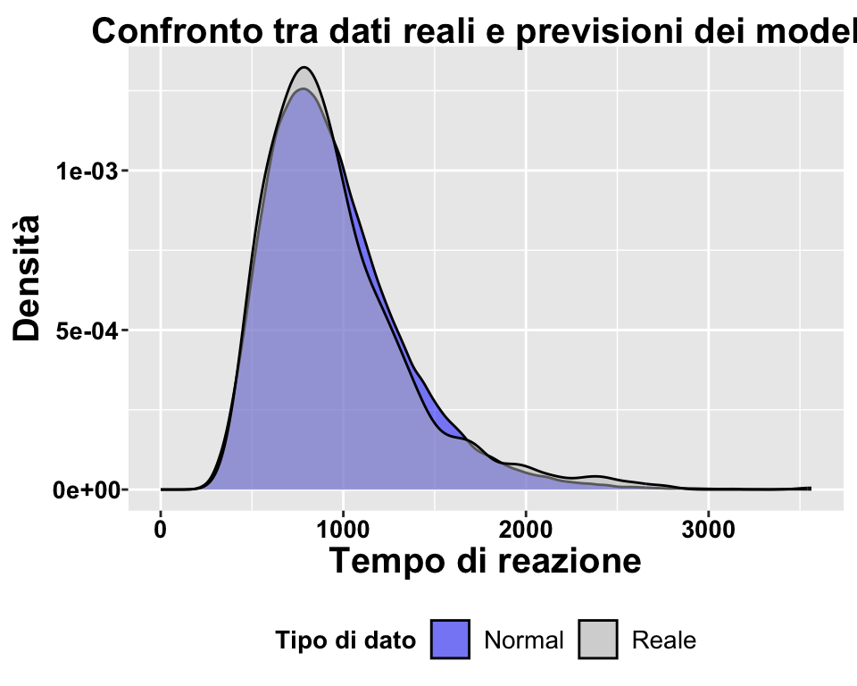
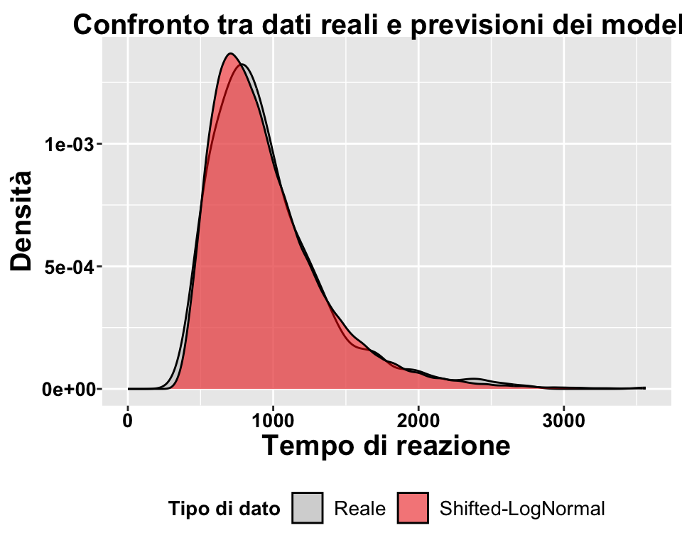

Ideally, we should use distribution that can effectively separate three key parameters: Difficulty, Onset, and Scale…
Expertise
lme4
Gamma vs. Inverse Gaussian
Gamma
α > 0 shape
λ > 0 rate
Inverse Gaussian
μ > 0 mean
λ > 0 shape
Their are both difficulty-like parameters. Their interaction determines scale and center.
μ reflects difficulty, λ influence the scale. The larger μ and the smaller λ, the more variable the RTs:
Gamma
Interpretability
α independent events.
λ rate of events per unit time.
The total time for all events.
μ = α / λ
Inverse Gaussian (Wald)
Interpretability
The name “inverse Gaussian” comes from its relation to Brownian motion (or Wiener process). It “describes the distribution of the time a Brownian motion with positive drift takes to reach a fixed positive level” [Wikipedia].
Code
set.seed(11)rdm_path =function(drift, threshold, ndt, sp1=0, noise_constant=1, dt=0.0001, max_rt=2) { max_tsteps = max_rt/dt# initialize the diffusion process tstep =0 x1 =c(sp1*threshold) # vector of accumulated evidence at t=tstep time =c(ndt)# start accumulatingwhile (x1[tstep+1] < threshold & tstep < max_tsteps) { x1 =c(x1, x1[tstep+1] +rnorm(mean=drift*dt, sd=noise_constant*sqrt(dt), n=1)) time =c(time, dt*tstep + ndt) tstep = tstep +1 }return (data.frame(time=time, x=x1, accumulator=rep(1, length(x1))))}drift =1;threshold =2; ndt = .1sim_path =rdm_path(drift = drift,threshold = threshold, ndt = .1)ggplot(data = sim_path, aes(x = time, y = x))+geom_line(size =1, color ="blue4") +geom_hline(yintercept=threshold, size=1)
Warning: Using `size` aesthetic for lines was deprecated in ggplot2 3.4.0.
ℹ Please use `linewidth` instead.
Rows: 716 Columns: 7
── Column specification ────────────────────────────────────────────────────────
Delimiter: ","
chr (4): ID, School, Gender, listType
dbl (3): Grade, Age_months, time
ℹ Use `spec()` to retrieve the full column specification for this data.
ℹ Specify the column types or set `show_col_types = FALSE` to quiet this message.
Logarithms model proportional changes rather than absolute differences.
Code
# Set seed for reproducibilityset.seed(123)# Parameters for simulationn =1000# Number of observationsa =6.5# Baseline intercept for the log-transformed mean (mu)b =0.02# Effect of covariate Xx =rnorm(n, 0, 0.05) sigma =0.5# Standard deviation of the log-transformed RTsmu = a + b*x# Effect of X on mu (mean log RT)RT =rlnorm(n, meanlog = mu, sdlog = sigma) # Log-normal dataggplot(data.frame(rt = RT), aes(x = rt)) +geom_histogram(aes(y = ..density..), bins =30, fill ="lightblue", color ="black", alpha =0.6) +labs(title ="Distribution of Simulated RTs", x ="RTs (ms)", y ="Density")
Warning: The dot-dot notation (`..density..`) was deprecated in ggplot2 3.4.0.
ℹ Please use `after_stat(density)` instead.

Code
RT_diff =exp(log(RT) +0.03) - RT ggplot(data.frame(mu = RT, relative_change = RT_diff), aes(x = mu, y = RT_diff)) +geom_point(alpha =0.6, color ="red") +labs(title ="Change in log scale = 0.03", x ="RT ms", y ="Change in RT ms") +scale_x_continuous(breaks =seq(0,4000,400))+scale_y_continuous(breaks =seq(0,120,10))

Inverse Gaussian vs. Gamma
Code
mInv = lme4::glmer(time ~ freq + age + (1|ID), data = dat_e, family =inverse.gaussian(link ="log"))sumInv =summary(mInv)mGam = lme4::glmer(time ~ freq + age + (1|ID), data = dat_e, family =Gamma(link ="log"))sumGam =summary(mGam)
ppInv = performance::check_predictions(mInv, iterations =100, type ="density")
Loading required namespace: statmod
Code
time =rowMeans(ppInv)dat_e_plot =rbind(dat_e[,c("freq","time")], cbind(dat_e[,"freq"], time))dat_e_plot$type =as.factor(c(rep("real", nrow(dat_e)),rep("pred",length(time))))ggplot(dat_e_plot, aes(x = time, fill = type))+geom_density(alpha = .5)+facet_wrap(~freq)+xlim(0,max(dat_e_plot$time))
Posterior predictions
Gamma
Code
ppGam = performance::check_predictions(mGam, iterations =100, type ="density")time =rowMeans(ppGam)dat_e_plot =rbind(dat_e[,c("freq","time")], cbind(dat_e[,"freq"], time))dat_e_plot$type =as.factor(c(rep("real", nrow(dat_e)),rep("pred",length(time))))ggplot(dat_e_plot, aes(x = time, fill = type))+geom_density(alpha = .5)+facet_wrap(~freq)+xlim(0,max(dat_e_plot$time))
Warning in checkConv(attr(opt, "derivs"), opt$par, ctrl = control$checkConv, :
Model failed to converge with max|grad| = 0.146027 (tol = 0.002, component 1)
Warning in checkConv(attr(opt, "derivs"), opt$par, ctrl = control$checkConv, : Model is nearly unidentifiable: very large eigenvalue
- Rescale variables?
Warning in checkConv(attr(opt, "derivs"), opt$par, ctrl = control$checkConv, :
Model failed to converge with max|grad| = 0.145836 (tol = 0.002, component 1)
Warning in checkConv(attr(opt, "derivs"), opt$par, ctrl = control$checkConv, : Model is nearly unidentifiable: very large eigenvalue
- Rescale variables?
Warning in checkConv(attr(opt, "derivs"), opt$par, ctrl = control$checkConv, :
Model failed to converge with max|grad| = 0.144985 (tol = 0.002, component 1)
Warning in checkConv(attr(opt, "derivs"), opt$par, ctrl = control$checkConv, : Model is nearly unidentifiable: very large eigenvalue
- Rescale variables?
Warning in checkConv(attr(opt, "derivs"), opt$par, ctrl = control$checkConv, :
Model failed to converge with max|grad| = 0.14143 (tol = 0.002, component 1)
Warning in checkConv(attr(opt, "derivs"), opt$par, ctrl = control$checkConv, : Model is nearly unidentifiable: very large eigenvalue
- Rescale variables?
tGam=loo_predict(mGam)$resultreal_rt = dat_e$timedf_plot_cor =data.frame(pred =c(tInv,tGam), freq =c(dat_e_plot$freq),Dist =factor( x =rep(c("Inverse Gaussian","Gamma"), each =length(tInv)),levels =c("Inverse Gaussian","Gamma")),real =rep(real_rt, times =2))#cor(df_plot_cor$pred[df_plot_cor$Dist=="Inverse Gaussian"],df_plot_cor$real[df_plot_cor$Dist=="Inverse Gaussian"])#cor(df_plot_cor$pred[df_plot_cor$Dist=="Gamma"],df_plot_cor$real[df_plot_cor$Dist=="Gamma"])ggplot(df_plot_cor, aes(y = real, x = pred, color = Dist))+geom_point()+geom_abline(intercept =0, slope =1,linewidth =1)+facet_wrap(~freq)

Bayesian … :)
Inverse Gaussian (Brms non-info prior)
mInv_brms=readRDS('modInv_e.rds')pp_check(mInv_brms, ndraws =100, type ="dens_overlay_grouped", group ="freq")+xlim(0,90)
Warning: Removed 1 row containing non-finite outside the scale range
(`stat_density()`).

Bayesian … :)
Gamma (Brms non-info prior)
mGam_brms=readRDS('modGam_e.rds')pp_check(mGam_brms, ndraws =100, type ="dens_overlay_grouped", group ="freq")+xlim(0,90)
This is a probability distribution for a random variable Y. If Y is log-normally distributed, then log(Y) follows a normal distribution. The distribution is defined directly for Y, not for a transformed version of Y!
- influence difficulty. Median = shift + exp(μ).
σ > 0 scale - increases the mean but not the median.
shift > 0 - earliest possible response.
Shifted LogNormal
data =readRDS("data.rds")ggplot(data.frame(rt = data$rt), aes(x = data$rt)) +geom_histogram(aes(y = ..density..), bins =30, fill ="lightblue", color ="black", alpha =0.6) +labs(title ="Distribution of Simulated RTs", x ="RTs (ms)", y ="Density")

ggplot(data.frame(rt = data$log_rt), aes(x = data$log_rt)) +geom_histogram(aes(y = ..density..), bins =30, fill ="lightblue", color ="black", alpha =0.6) +labs(title ="Distribution of Simulated RTs", x ="log(RTs)", y ="Density")

Shifted-LogNormal
fitN =readRDS("fitN.rds")fitLN =readRDS("fitLN.rds")pred_normal =exp(posterior_predict(fitN, ndraws =200))pred_lognormal =posterior_predict(fitLN, ndraws =200)RT = data$rt# Prepara i dati per il plotdataPlotNorm =data.frame(rt =c(RT, as.vector(pred_normal)),type =c(rep("Reale",length(RT)),rep("Normal", length(pred_normal))))# Crea il plotggplot(dataPlotNorm, aes(x = rt, fill = type)) +geom_density(alpha =0.5) +scale_fill_manual(values =c("Reale"="grey", "Normal"="blue", "Log-normale"="red")) +labs(title ="Confronto tra dati reali e previsioni dei modelli",x ="Tempo di reazione",y ="Densità",fill ="Tipo di dato") +xlim(0, max(RT)) +theme(legend.position ="bottom")

cat(sprintf("Median real RT: %.3f\n", median(RT)))
# Prepara i dati per il plotdataPlotLogNorm =data.frame(rt =c(RT, as.vector(pred_lognormal)),type =c(rep("Reale",length(RT)),rep("Shifted-LogNormal", length(pred_lognormal))))ggplot(dataPlotLogNorm, aes(x = rt, fill = type)) +geom_density(alpha =0.5) +scale_fill_manual(values =c("Reale"="grey", "Normale"="blue", "Shifted-LogNormal"="red")) +labs(title ="Confronto tra dati reali e previsioni dei modelli",x ="Tempo di reazione",y ="Densità",fill ="Tipo di dato") +xlim(0, max(RT)) +theme(legend.position ="bottom")
Warning: Removed 149 rows containing non-finite outside the scale range
(`stat_density()`).

cat(sprintf("Median real RT: %.3f\n", median(RT)))
Warning: There were 144 divergent transitions after warmup. Increasing
adapt_delta above 0.8 may help. See
http://mc-stan.org/misc/warnings.html#divergent-transitions-after-warmup
Family: shifted_lognormal
Links: mu = identity; sigma = identity; ndt = log
Formula: time ~ freq + age + (1 | ID)
ndt ~ 1 + (1 | ID)
Data: dat_e (Number of observations: 476)
Draws: 4 chains, each with iter = 6000; warmup = 3000; thin = 1;
total post-warmup draws = 12000
Multilevel Hyperparameters:
~ID (Number of levels: 238)
Estimate Est.Error l-95% CI u-95% CI Rhat Bulk_ESS Tail_ESS
sd(Intercept) 0.51 0.04 0.43 0.59 1.00 2310 5146
sd(ndt_Intercept) 0.16 0.03 0.09 0.22 1.01 539 1355
Regression Coefficients:
Estimate Est.Error l-95% CI u-95% CI Rhat Bulk_ESS Tail_ESS
Intercept 1.76 0.10 1.55 1.95 1.02 675 1355
ndt_Intercept 1.95 0.07 1.81 2.07 1.01 617 1389
freq1 -0.74 0.07 -0.89 -0.62 1.01 796 1754
age -0.22 0.04 -0.31 -0.14 1.01 1225 2948
Further Distributional Parameters:
Estimate Est.Error l-95% CI u-95% CI Rhat Bulk_ESS Tail_ESS
sigma 0.31 0.03 0.26 0.37 1.01 1454 3114
Draws were sampled using sampling(NUTS). For each parameter, Bulk_ESS
and Tail_ESS are effective sample size measures, and Rhat is the potential
scale reduction factor on split chains (at convergence, Rhat = 1).
Warning: Some Pareto k diagnostic values are too high. See help('pareto-k-diagnostic') for details.
Warning: Found 6 observations with a pareto_k > 0.7 in model 'mShift_brms'. We
recommend to set 'reloo = TRUE' in order to calculate the ELPD without the
assumption that these observations are negligible. This will refit the model 6
times to compute the ELPDs for the problematic observations directly.